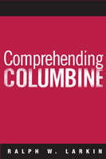

The definitive book on the school massacre that shocked a nation
The definitive book on the school massacre that shocked a nation


 The definitive book on the school massacre that shocked a nation
The definitive book on the school massacre that shocked a nation

|  |
Comprehending ColumbineRalph W. Larkinpaper EAN: 978-1-59213-491-5 (ISBN: 1592134912) |
Outstanding Academic Title, Choice, 2009
"Larkin creates a powerful lens to examine the complexities of the forces which contributed to the Columbine tragedy. The introductory narrative of the rampage is so vivid that both the casual and studied reader will be instantly engaged.... Drawing on his skill as an interviewer and researcher, Larkin is able to give the reader a glimpse of the cultural and everyday social reality of Columbine High School [and he] does an excellent job of situating school shootings in the larger cultural landscape of violence in America. Larkin's book is destined to be the definitive work on the Columbine shootings."
—Raymond Calluori, New Jersey Institute of Technology
On April 20, 1999, two Colorado teenagers went on a shooting rampage at Columbine High School. That day, Eric Harris and Dylan Klebold killed twelve fellow students and a teacher, as well as wounding twenty-four other people, before they killed themselves. Although there have been other books written about the tragedy, this is the first serious, impartial investigation into the cultural, environmental, and psychological causes of the massacre.
Based on first-hand interviews and a thorough reading of the relevant literature, Ralph Larkin examines the numerous factors that led the two young men to plan and carry out their deed. For Harris and Klebold, Larkin concludes, the carnage was an act of revenge against the "jocks" who had harassed and humiliated them, retribution against evangelical students who acted as if they were morally superior, an acting out of the mythology of right-wing paramilitary organization members to "die in a blaze of glory," and a deep desire for notoriety.
Rather than simply looking at Columbine as a crucible for all school violence, Larkin places the tragedy in its proper context, and in doing so, examines its causes and meaning.
Excerpt available at www.temple.edu/tempress
"This book is not just about Harris and Klebold's motivations.... It is about the influence of social structure on those labeled as outsiders, ... about structurally entrenched sources of gendered violence and degradation."
—Peter Freund, Montclair State University
"Think you know all there is to know about the Columbine school massacre (4/20/1999)? Think again. Larkin (Suburban Youth in Cultural Crisis) covers
known and little-known details, aiming to answer why Eric Harris and Dylan Klebold went on their shooting rampage..Some will say that Columbine doesn't need any more scrutinizing. But after the recent Virginia Tech shootings,
people will be looking for more insights into youth who feel ostracized and ways to help them avoid feeling so alienated in the first place. There is an audience for this book, which should be considered by public and academic libraries."
—Library Journal
"Larkin has undertaken an important task in this work. He deconstructs the Columbine High School tragedy, attempting to reach an objective understanding of a complicated event that has become tangled in myth and emotion. He presents the events at Columbine carefully before examining the influences that may have contributed to this crisis.... The author pulls the reader closer to the situation by including narrative from his interviews, quotes from important sources, and specific examples. The resulting work is well organized and written...The content of this book should be required reading for school administrators, educators, counselors, and others who work regularly with young people....Summing Up: Highly Recommended."
—Choice
"Larkin offers a portrait of Columbine unlike any we have ever seen before, and it definitely deserves to be considered among the definitive works on this issue.... [His] argument is both novel and convincing. He draws his data from a myriad of sources and because he is very calculated and cautious in his claims, he makes his case very believable....[T]his work by Larkin is an important first step in looking at the phenomenon of rampage school shooting through a sociological lens."
—Men and Masculinities
Also available in e-book
List of Tables
List of Figures
1. Armageddon (Well, Almost)
2. God's Country
3. Culture Wars at Columbine
4. The Peer Structure of Columbine High
5. The Other Columbine
6. Eric and Dylan
7. From Oklahoma City to Columbine
8. Dead Celebrities
9. Give Peace a Chance
References
 | Ralph W. Larkin, Ph.D. is owner of Academic Research Consulting Service and a Senior Research Associate, John Jay College of Criminal Justice, City University of New York. He is the author of Suburban Youth in Cultural Crisis (with Daniel A. Foss) and Beyond Revolution: Social Movements in Historical and Comparative Perspective. |
Education
Sociology
Law and Criminology
© 2015 Temple University. All Rights Reserved. This page: http://www.temple.edu/tempress/titles/1846_reg.html.